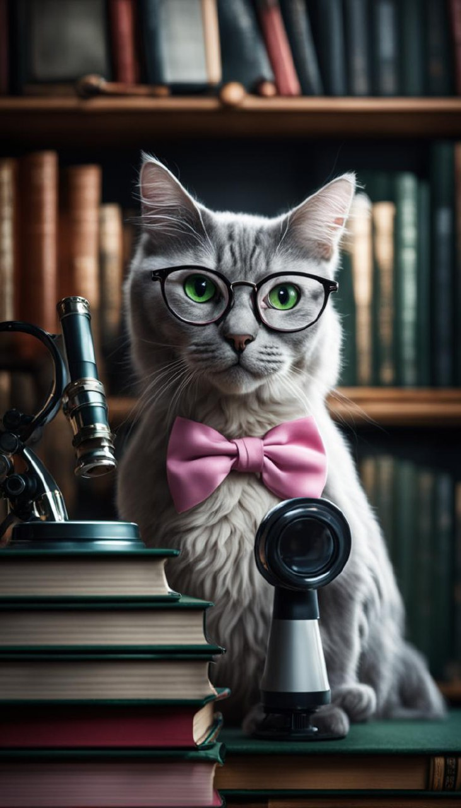

Профессорка Мерлин - Учёная Кошка
Кошки в науке
Кошки — уникальные животные. В Древнем Египте их даже считали священными.
Ученые из Университета Минессоты доказали, что соседство с кошками помогает снизить риск сердечного приступа почти на треть.
Кошки отвлекают от мрачных мыслей и
поднимают настроение. Это подтвердили 76% участников опроса, проведенного центром Mental Health Foundation. Ученые из
Института общения животных в Северной
Каролине установили, что кошачье мурлыканье укрепляет кости и активирует их рост. Эта особенность позволяет кошкам
выживать при падении с большой высоты. Кошки могут защитить ребенка от развития астмы
и аллергий.
Они способны уменьшить чувствительность к шерсти, пылевым клещам и пыльце цветущих растений. Вы не поверите,
но согласно исследованию Университета Кэрролла, владельцы кошек умнее владельцев собак.
Кошки как тест-система вносят уникальный вклад в процесс разработки лекарственных препаратов, данный вид животных
незаменим в экспериментальной неврологии, офтальмологии, исследовании ретровирусов, наследственных
и иммунодефицитных заболеваний.